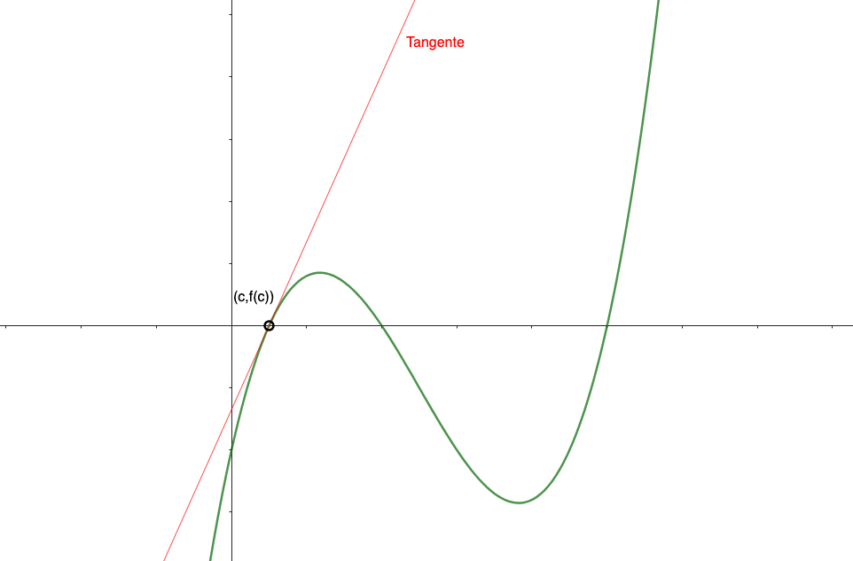
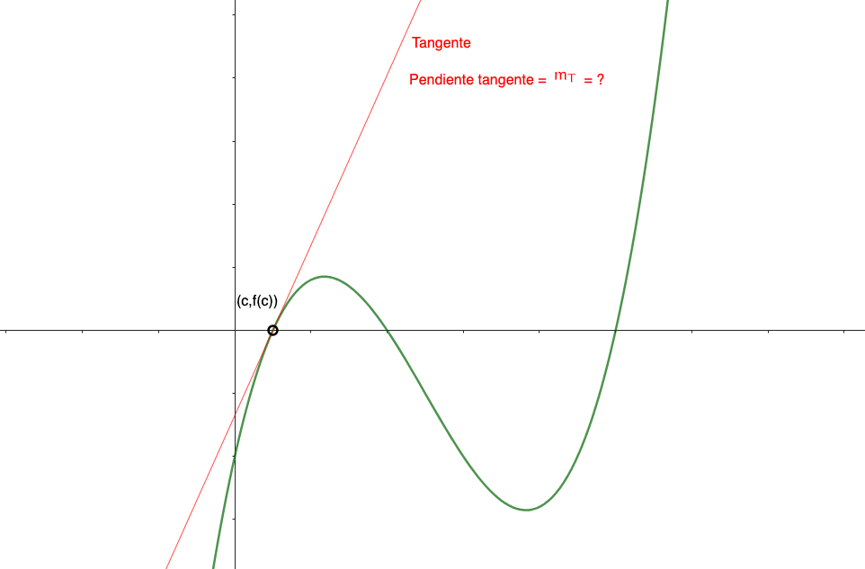
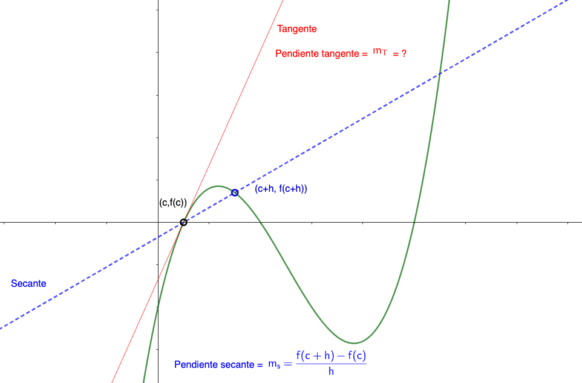
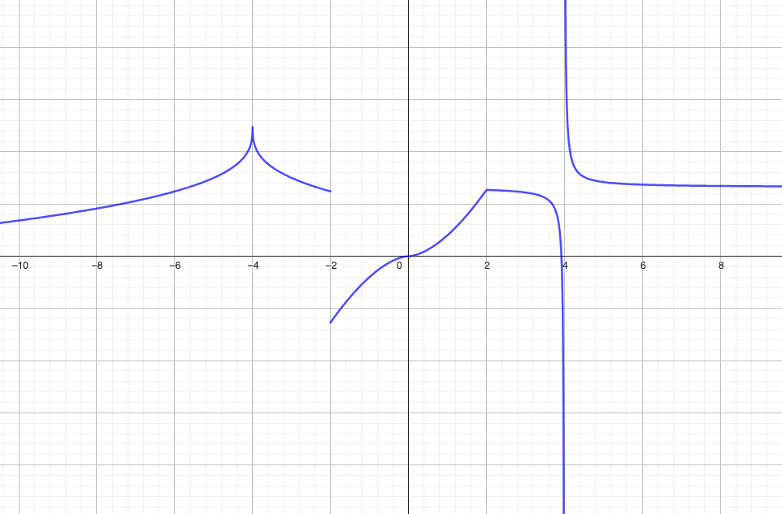

Matemáticas
Auditoría e Ingeniería en Control de Gestión
Contador Público y Auditor

Derivada
1. Problema Determinar la ecuación de la recta tangente a la curva \(y = f(x)\) en el punto \(x=c\).

Derivada
Recordar que la ecuación de la recta que pasa por el punto \((x_0, y_0)\) y pendiente \(m\) es: \[y-y_0 = m(x-x_0)\]
Derivada
Tenemos el punto \((x_0,y_0)=(c, f(c))\) luego nos falta establecer la pendiente de la recta tangente \(m_T\).

Derivada
Si trazamos rectas secantes que cortan al punto \((c,f(c))\) y al punto (\(c+h,f(c+h))\), entonces podemos calcularles su pendiente \(m_S\)

Derivada
Veamos que ocurre cuando \(h\longrightarrow 0\):
Derivada
Como vimos antes la pendiente de la recta secante que pasa por \((c,f(c))\) y \((c+h,f(c+h))\) es \(m_s = \dfrac{f(c+h)-f(c)}{c+h -c} = \dfrac{f(c+h)-f(c)}{h}\)

Y cuando \(h\longrightarrow 0\) entonces las rectas secantes se aproximan a la recta tangente, por lo que se debe cumplir que \[m_T = \lim_{h \rightarrow 0} m_S = \lim_{h \rightarrow 0} \frac{f(c+h)-f(c)}{h}\]
Derivada
Volviendo al ejecicio inicial, se obtiene que la pendiente de la recta tangente, \(m_T\), a la curva \(y=f(x)\) en el punto \(x=c\), se obtiene usando la siguiente definición.
La pendiente de la recta tangente al gráfico de la función \(f\) en el punto \((c,f(c))\) se puede calcular como \[m_T = \lim_{h \rightarrow 0} \frac{f(c+h) - f(c)}{h}\]
Ejemplos
Determinar la ecuación de la recta tangente a la curva \(y = x^2 + 1\), en el punto \((1,2)\) ¿Qué ocurre en el punto \((0,1)\) y en el punto \((-1,2)\)?
Ejemplos
Determinar la ecuación de la recta tangente a la curva \(y = \dfrac{3}{x}\), en el punto \((3,1)\)
¿Cómo reconocer cuando la derivada no existe en un gráfico?

¿Cómo reconocer cuando la derivada no existe en un gráfico?
-
En \(x=2\) la derivada no existe pues la pendiente de la tangente por la izquierda es distinta a la pendiente de la tangente por la derecha.
-
En \(x=-4\) y en \(x=0\) la derivada no existe pues las tangentes se vuelven verticales.
-
En \(x=-2\) y en \(x=4\) la derivada no existe pues la función no es continua.
La derivada de una función
La derivada de una función \(f\) en \(c\), denotada por \(f'(c)\) está dada por
\[f'(c) = \lim_{h \rightarrow 0} \frac{f(c+h) - f(c)}{h}\] si el límite existe
La pendiente de la recta tangente a \(y=f(x)\) en el punto \((c, \, f(c))\) es \(m_T = f'(c)\)
Usar la definición para calcular las derivadas de las siguientes funciones:
-
Si \(f(x) = a\) donde \(a\) es una constante, entonces \(f'(x) =\)
-
Si \(f(x) = x\), entonces \(f'(x) =\)
-
Si \(f(x) = x^2\), entonces \(f'(x) =\)
Derivadas de algunas funciones
-
Si \(f(x) = a\) donde \(a\) es una constante, entonces \(f'(x) = 0\)
-
Si \(f(x) = x^n\), y \(n\) es un número racional, entonces \(f'(x) = nx^{n-1}\)
-
Si \(f(x) = e^x\) , entonces \(f'(x) = e^x\)
-
Si \(f(x) = \ln x\) , entonces \(f'(x) = \dfrac{1}{x}\)
Calcular la derivada de las siguientes funciones
-
\(\displaystyle f(x) = \sqrt{x}\)
-
\(\displaystyle f(x) = \frac{1}{x}\)
-
\(\displaystyle f(x) = \frac{1}{x^2}\)
Derivada como tasa de cambio
Si consideramos una función \(y=f(x)\) entonces \[\frac{f(x_0+h)-f(x_0)}{h}\] también representa la tasa promedio de cambio de la función \(y\) respecto a \(x\) en el intervalo de \(x_0\) a \(x_0+h\).
Un objeto se mueve a lo largo de un camino recto y se determina que su posición está dada por la función \(y=f(x)=x^2\) donde \(x\) está en segundos e \(y\) en metros.
Encuentre la velocidad promedio del objeto en el intervalo \([2,2.1]\).
Derivada como tasa de cambio
Si consideramos una función \(y=f(x)\) entonces \[f'(x_0)=\lim_{h\to0}\frac{f(x_0+h)-f(x_0)}{h}\] representa la tasa de cambio instantánea de la función \(y\) respecto a \(x\) exactamente en \(x=x_0\).
Un objeto se mueve a lo largo de un camino recto y se determina que su posición está dada por la función \(y=f(x)=x^2\) donde \(x\) está en segundos e \(y\) en metros.
Encuentre la velocidad instantánea del objeto cuando \(t=2\).